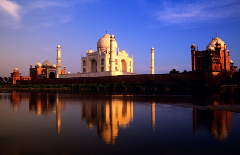
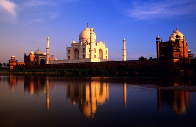

Taj Mahal
 

The Taj Mahal, a UNESCO World Heritage site, is one of the most stunning monuments in the world, renowned for its breathtaking beauty and timeless elegance. Located in Agra, India, this marble mausoleum was built by Emperor Shah Jahan in memory of his beloved wife Mumtaz Mahal. Its intricate architecture, surrounded by lush gardens and reflecting pools, creates a serene and majestic atmosphere. A symbol of eternal love, the Taj Mahal is a must-visit destination, offering visitors a glimpse into India's rich history and a chance to experience one of the world's most celebrated architectural wonders.
Mesmerising! ⭐️⭐️⭐️⭐️⭐️
"The Taj Mahal is absolutely mesmerising! Seeing it in person was a dream come true. The intricate marble work, shimmering in the sunlight, is more beautiful than any photo can capture. I visited at sunrise, and the soft glow added an ethereal quality to the monument. The gardens are immaculate, and the reflection of the Taj in the central pool is stunning. It's more than a masterpiece—it's an experience that stirs your soul. A must-see for anyone visiting India!"
- Anonymous
Just spectacular ⭐️⭐️⭐️⭐️⭐️
"An unforgettable experience! The Taj Mahal is a testament to timeless beauty and love. Walking through the gates and seeing the monument for the first time was breathtaking—it’s truly a sight to behold. The intricate carvings and precious stone inlays are remarkable, and the sheer scale of the structure is impressive. I recommend visiting at sunset when the changing light creates a magical atmosphere. Don’t miss exploring the surrounding gardens and the view from the Yamuna River. It’s a masterpiece in every sense of the word!"
- Keiran Winn
Loved it, but crowded ⭐️⭐️⭐️⭐️
"The Taj Mahal is as stunning as its reputation suggests, but be prepared for crowds. The grandeur and detail of the structure are awe-inspiring, and the symmetry of the gardens enhances its beauty. I visited mid-morning, and while the sunlight made the marble glow, it was already quite busy, which took away from the tranquility. Hiring a guide was worth it to learn about the history and craftsmanship. For a more peaceful experience, try to go early in the morning or during off-peak times."
- Brayden Kirk
Recommended journey
Taj Mahal Day Tour from Delhi by Calvin Syres - TOP RATED TOUR
From £12.04 per adult (price varies by group size)
Check availability